Experiment on Broadband Communication Network
Used Wireshark to analyze the number of URL first packets and RTT time.
Calculated the theoretical fastest time to transmit 128KB without server delay response (slow- start algorithm is exponential growth) under conditions of 50ms delay, no packet loss, jitter free network.
Used iptables to analyze characteristics of TCP retransmission timer respectively under the system of CENTOS-5, CENTOS-6, WIN7.• Used Dns Tunnel tool (like iodine) to traverse the campus gateway billing system to access Internet bypassing WEB portal authentication.
Download wget for packet capture. wget is a free tool that automatically downloads files from the Internet. Download and unzip it from http://soft.hao123.com/soft/appid/8311.html and then locate it in D:\UnxUtils\usr\local\ Below wbin.
Use the command line cd D:\UnxUtils\usr\local\wbin to enter the directory and download URL1, URL2, URL3 in turn1) Download url1 and capture the package
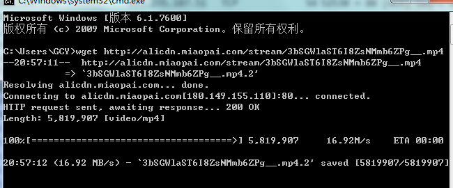Enter tcp.srcport==80 in the filter to filter out TCP protocol packets on port 80
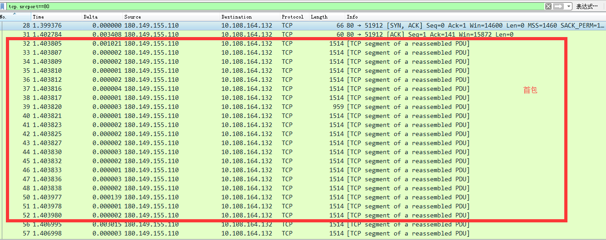Close the dialog box, enter &&ip.src==server IP address after tcp.stream eq x in the filter, and capture the data packet returned by the server, as shown in the figure below. It can be seen from the figure that the RTT time is 3.4ms. The number of the first packet is 20. The first packet is the number of data packets sent by the server to the server within the next RTT after the handshake is successful, that is, after the first RTT establishes a connection.
After using tcp.srcport==80 and tracking the stream, it was found that 302 hijacking occurred
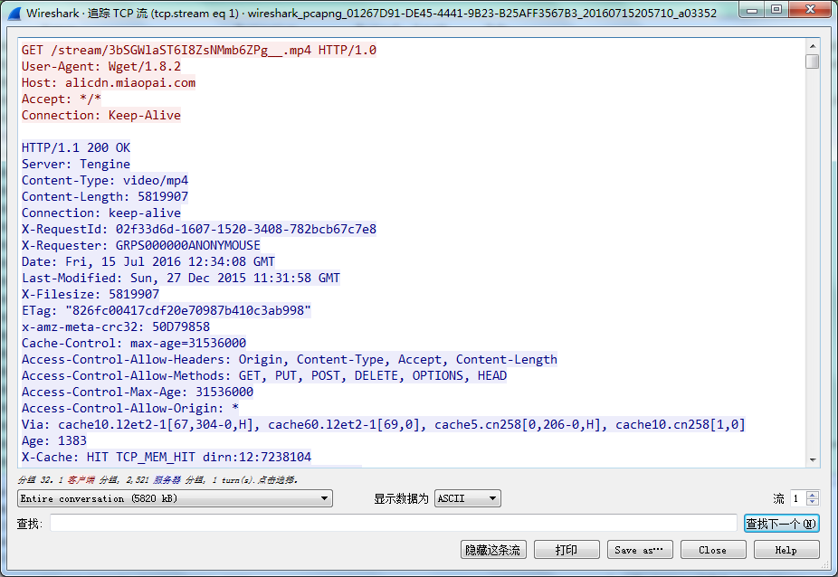Delete the four 10.3.200.200 hijacked data packets counted down from the HTTP GET request packet (including it) in the red box in the red box below to block the 302 hijacking.
Enter &&tcp.len>0||tcp.flags.syn==1 after tcp.stream eq x in the filter, filter out the data packet communication between this machine and url2, and count the first packet in the red box , The first package is 30
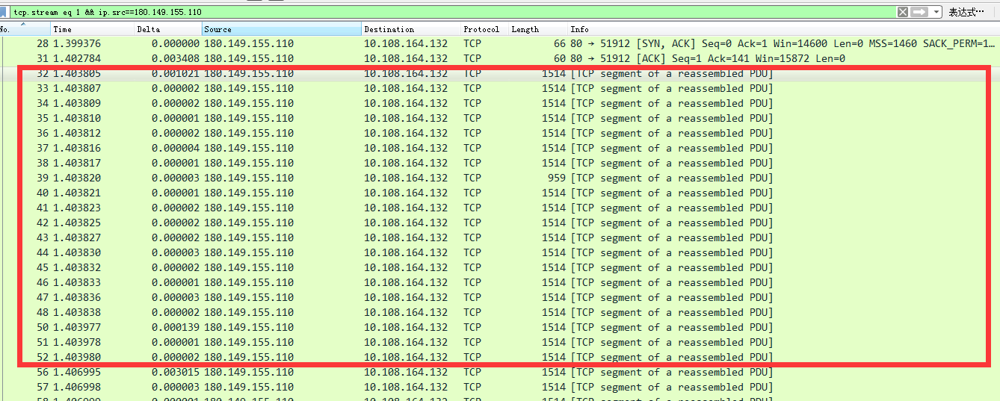 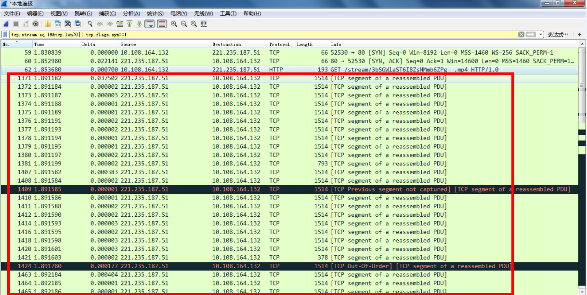 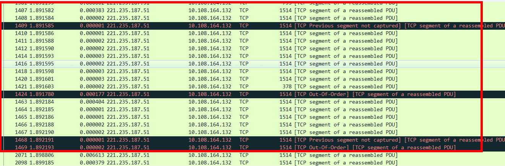Delete the content in the red box to achieve filtering and hijacking
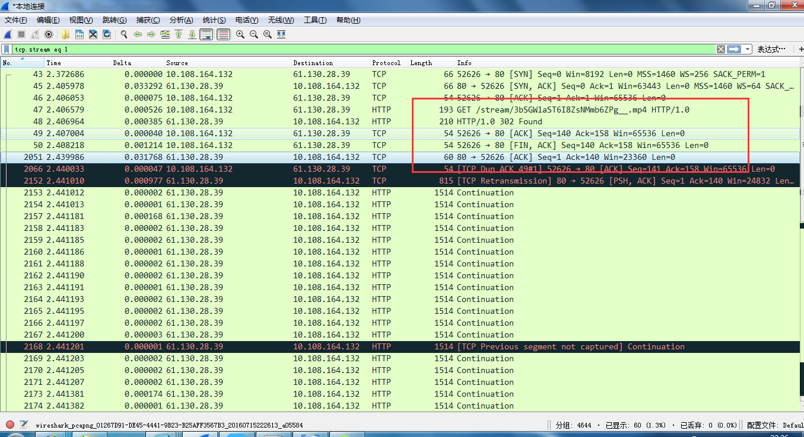Enter the filtering instruction, and then count the number of first packets as 22
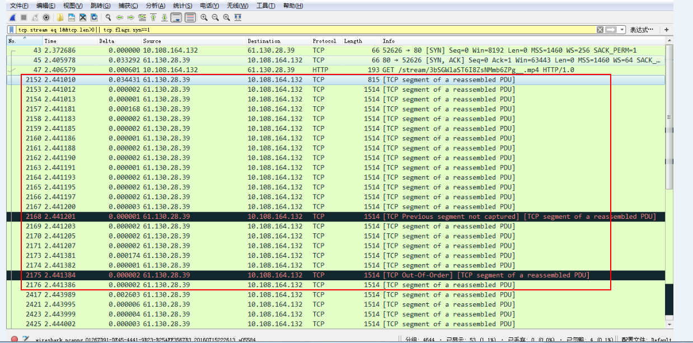In the vi editor, press the i key to enter the editing mode. There are two modes in vi: one is the editing mode and the other is the command mode. Click i to enter the edit mode from the command mode, and click the esc key to re-enter the command mode. We generally enter the edit mode to add, modify, and delete. But when we delete and modify too much content, we use the command line mode to modify, which is convenient and fast. In the command line, the four most commonly used commands are x, dd, u, p: x : Delete the current character; dd: delete the current line; u: restore the previous operation; p: copy the previously deleted line. After entering the editing mode, enter net.ipv4.tcp_syn_retries = 1, then press ESC to return to the command line mode, and hit: wq to save and exit.
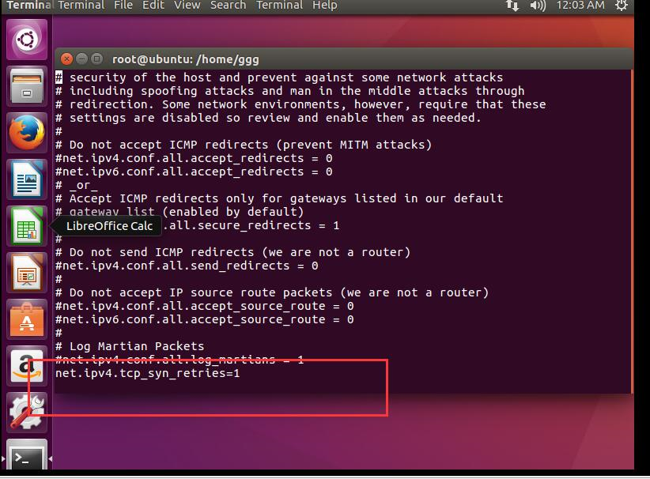Configure the iptables firewall to filter syn, ack, use the command iptables -A INPUT -p tcp --tcp-flags SYN,ACK SYN,ACK -j DROP
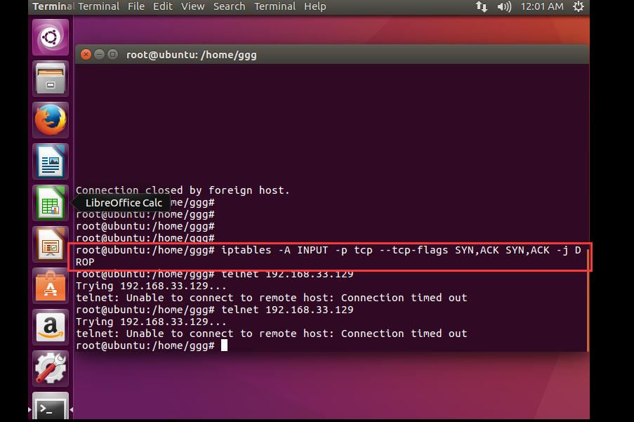It can be seen that the number of retransmissions of CentOS-6 is 5, and the delay increases by 2 times each time according to the law of 1, 2, 4, 8, 16
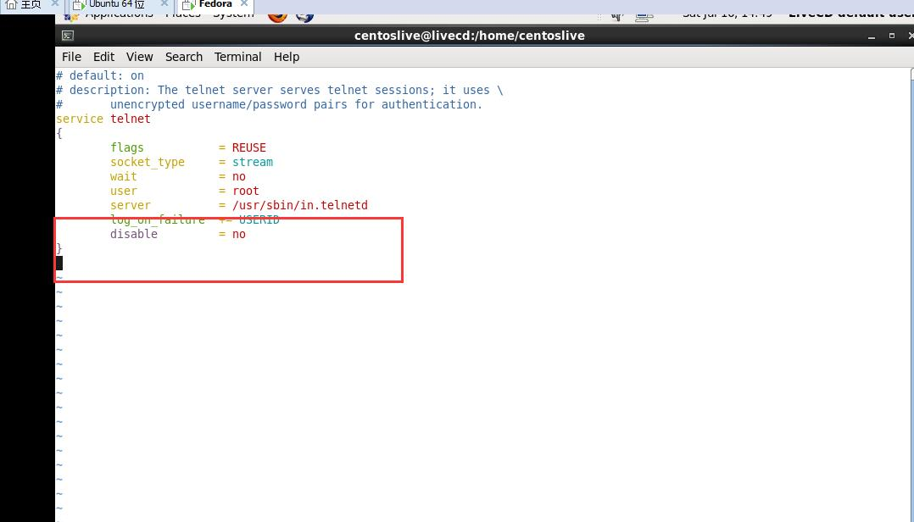 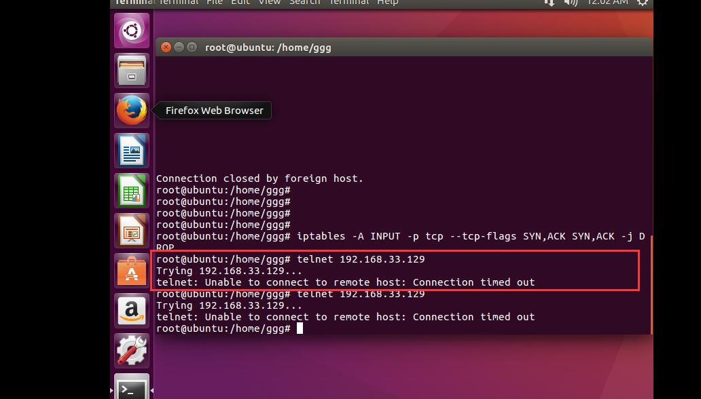 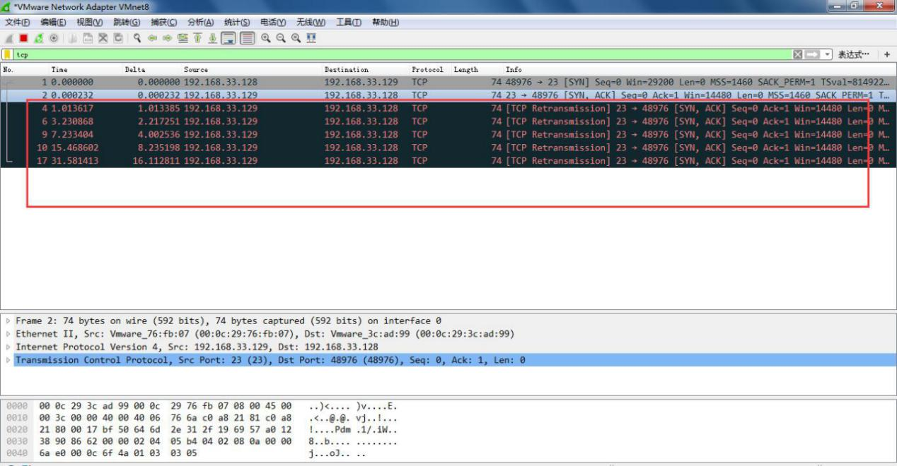You can see that the retransmission delay rule of CentOS5 is 3 6 12 24 48 seconds, and the retransmission is 6 times.
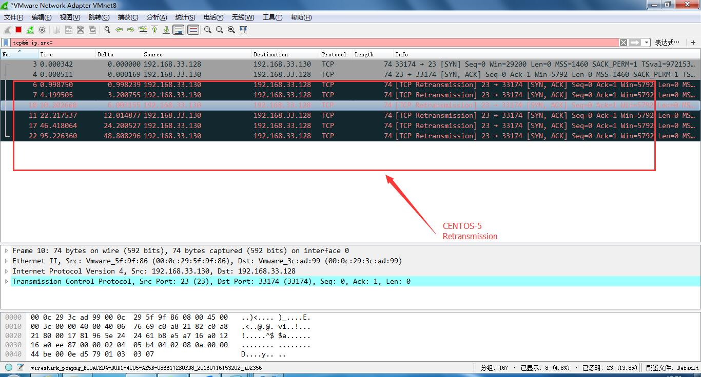There are only two timeout retransmissions in Windows7, and the delay is 3 and 6 seconds respectively.
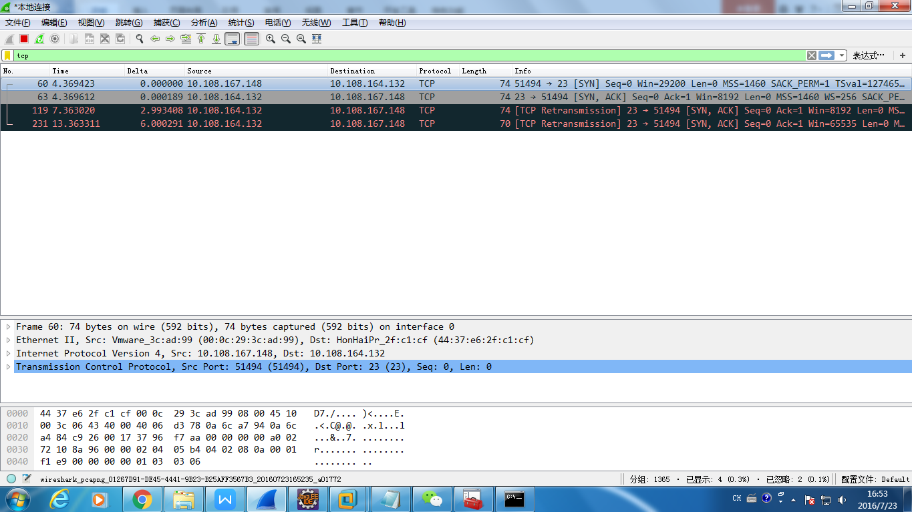Input command iodine -r nsbroadband.strangled.net -P broad The following content appears, indicating that the DNS tunnel is open
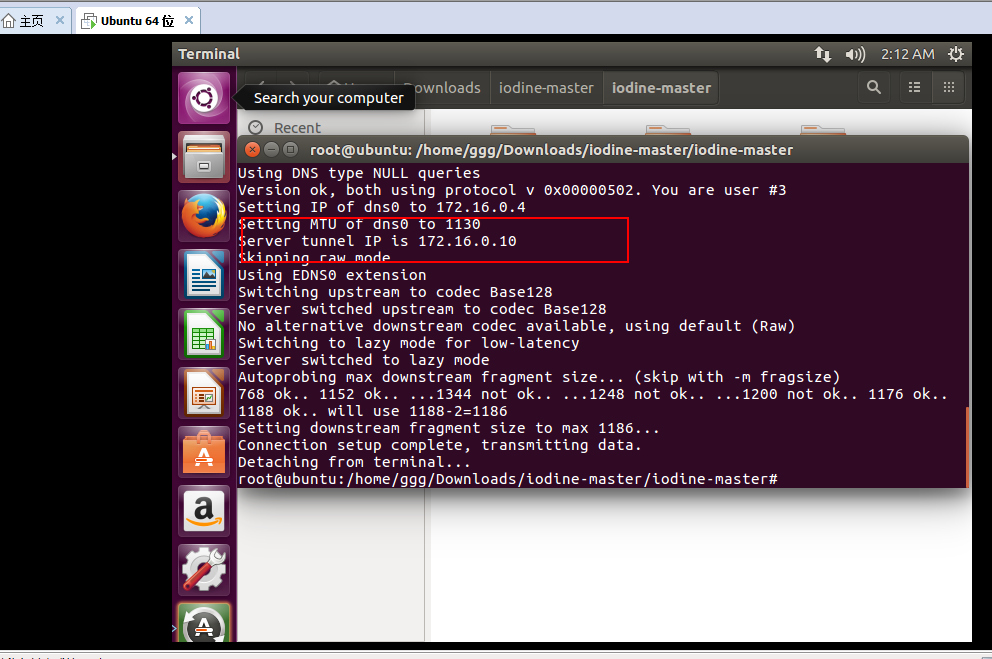